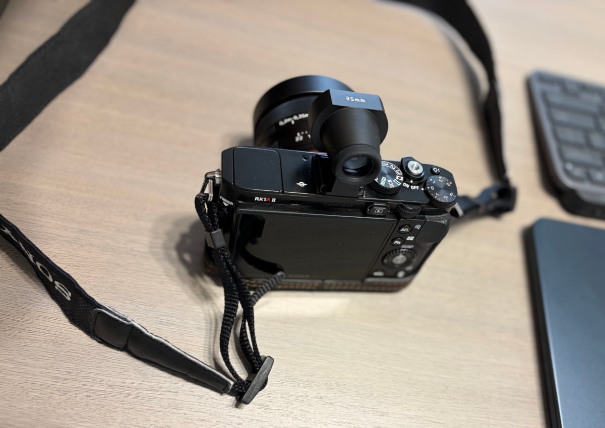
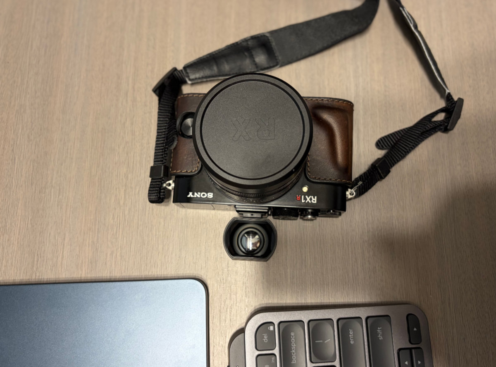

使用感受：
RX1R II 是一台非常轻便的全画幅定焦相机。配了带凸起的皮套后，单手握持感更加舒适可靠。
另外，还配了遮光罩与机顶热靴光学取景器（有35mm标线），暂未使用 UV 镜，去海边或遇到比较恶劣的环境时再考虑。
遮光罩可以减少杂光影响；光学取景器则有一点旁轴相机的感觉，视野明亮、自然，也很舒服。
Published Work
2026-08-12 外拍活动NO.009 | 观音诞辰日的丰士庙
2026-08-11 外拍活动NO.008 | 海宁丰士村老街的慢时光
2026-08-07 外拍活动NO.007 | 海宁丰士村老茶馆--仍在继续的旧时光
2026-08-04 外拍活动NO.006 | 35mm镜头下的盛泽老街
2026-07-29 初试锋芒-Rx1RM2
相机综述：
约4240万有效像素 35mm全画幅Exmor R CMOS背照式传感器/BIONZ X 处理器/蔡司Sonnar T* 35mm F2镜头/增强型混合自动对焦399个相位检测对焦点/光学可调节低通滤镜功能/内置可弹出XGA OLED电子取景器/3.0英寸可翻折液晶屏


主要参数：
- 产品名称：DSC-RX1RM2
- 影像传感器：35mm全画幅（35.9×24.0mm） ExmorR CMOS背照式传感器，尺寸比例3:2。约 4240 万有效像素
- 镜头：蔡司 Sonnar T* 镜头/8片7组（3片非球面镜片/其中含 AA镜片）；最大光圈F2；焦距f=35mm；定焦。
- 对焦范围：自动对焦：(从镜头前端起计算)约24cm至无穷远（微距开关环设置为“0.3m-∞”时），约14cm至29cm（微距开关环设置为“0.2m-0.35m”时）
- 对焦模式：单次AF/连续AF/DMF/手动对焦
- 对焦点：399点相位检测自动对焦/25点对比检测自动对焦
- 测光模式：多重/中心/点测光
- 液晶屏：3.0”Xtra Fine 可翻折液晶屏（向上约 109度，向下约 41度）约123 万像素。
- 取景器：自带弹出式电子取景器（ 约236万像素），有屈光度调节。
- 防抖方式： (动态影像) 电子防抖
- 曝光补偿：±5.0EV（步级：1/3EV），曝光补偿按钮±3.0EV（步级：1/3EV）
- ISO感光度设定(静态影像)：ISO100-25600（可扩展至ISO 50-102400）
- 快门速度：自动（4 秒 - 1/4000 秒）；手动曝光（B 门，30 秒- 1/4000 秒）
- 影像格式：静态影像：JPEG，RAW
- 电池：NP-BX1（附带）
- 电池使用时间：(静态影像) 约220张/约110 分钟（LCD），约200张/约100 分钟（取景器）
- 外形尺寸：113.3 x 65.4 x 72.0mm
- 重量：约507g（含电池与记忆棒）/约480g（仅主机）